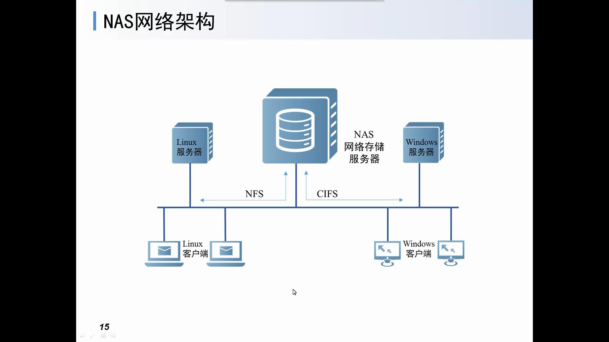

前言
其种类分为：
NAS：网络附属存储
SAN：存储区域网络
ISCSI：IP SAN存储技术
下面↓粗略的介绍各个存储的作用。
服务器主机SCSI ID资源有限，能够建立的SCSI通道连接有限
数据中心的多台服务器都在使用DAS时，冗余的存储空间不能在服务器之间动态分配，造成存储资源浪费
面对不同操作系统的服务器的DAS，网络管理员在数据共享和数据备份等应用中操作复杂，导致维护成本较高
当服务器发生故障时，会导致数据不可访问
各个存储介绍
NAS是在TCP/IP协议基础上提供文件的一种存取服务。 NAS优点&缺点：
1.易于安装--NAS产品是真正即插即用的产品。内置专门用于数据存储的简化操作系统和网络协议，可以直接挂接到网络上。
2.易于部署--用户可以根据需要来确定NAS的物理位置，一般将其放置在访问频率最高的地方，以进一步缩短用户的访问时间并提高网络吞吐量。
3.方便使用和管理--客户不需要安装任何额外软件，NAS服务器的设置、升级及管理均可通过Web浏览器远程实现。NAS服务器与网络直连，当增加或移去NAS设备时不会中断网络的运行。
4.整体性能高
5.跨平台使用--NAS独立于操作系统平台，可以支持Windows、UNIX、Mac、linux和Nerware等不同操作系统。
6.提高数据可用性
7.性能价格比优异--NAS是精简型服务器，在硬件架构上只需CUP、内存、硬盘、网卡和主机板等。在软件方面，操作系统也是精简型系统，有些甚至是免费的Linux。
1.NAS需要占用LAN的带宽,这会导致某些网络的卡顿情况或者传输缓慢就是因为NAS需要占用这些带宽而造成的。
2.受TCP/IP在帧传输时的丢包的影响
3.其IO操作开销较高
其传输过程是:文件→TCP/IP封装→网络传输→TCP/IP解封装→文件

图为NAS的网络架构图
SAN采用可扩展的网路拓扑结构连接服务器和存储设备，每个存储设备不隶属于任何一台服务器，所有的存储设备都可以在全部的网络服务器之间作为对等资源共享。其存储技术主要是给予光纤通道的、面向数据块的存储，可以看成是传统总线的扩展。
SAN的特性
SAN更适合网络关键任务的数据存储，与其他存储技术相比，SAN具有以下特性:
1.高性能、高速存储
2.集中存储和管理
3.可扩展性
4.高可用的数据
5.采用专用光纤网络
Internet小型机系统接口(iSCSI)协议整合了存储和IP网络，使通过IP网络完成存储数据块的传输成为现实
为存储而建立的SCSI命令和为网络化而建立的IP协议
ISCSI技术的优缺点
1.硬件成本低
2.操作简单、维护方便
3.带宽和性能
4.突破距离限制
1.增加了系统性能开销
2.如果采用专用的iSCSI网卡，则会增加成本
3.存取速度冗余受网路运行状况的影响

图为四种存储方式的特点对比图